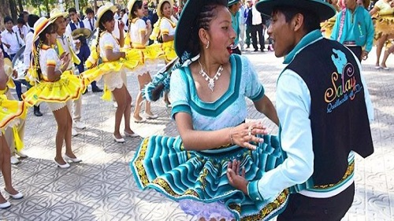

Salay
HISTORIA
El Salay se origino en las fiestas de ciertas comunidades de los valles de Potosí, Chuquisaca y Cochabamba durante la época de siembra y cosecha.
El zapateo rememora el cultivo, imita al labrador cuando siembra una semilla y arrastra los pies para taparla con tierra y así protegerla.
El zapateo de Villa Serrano inició en los años 60’s del siglo XX.

Salay
VESTIMENTA
Los varones visten: Camisa manga larga.
Chaleco de bayetilla.
Chumpi (faja en la cintura)
Pantalón con pinzas en la cintura.
Sombrero.
Zapatos de cuero. Las mujeres visten:Sobrero del color de traje.
Blusa con detalles hechos con el mismo material de la pollera.
Thullma al color de la pollera y de la blusa.
Faja con colores de acuerdo al color típico del conjunto.
Pollera que debe estar cinco centímetros arriba de la rodilla y las mujeres deben tener un fuste pegado al cuerpo.
Zapatos de taco medio.